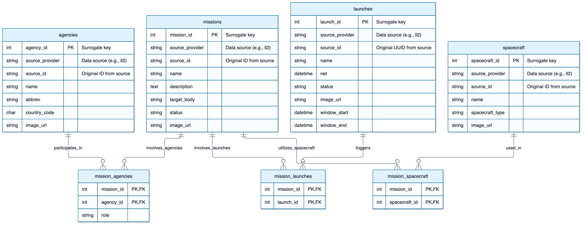

CRKL-Space
A searchable catalog of space missions, agencies, spacecraft, and launches
What CRKL-Space is
CRKL-Space is a database-driven web application for exploring space exploration data. It stores missions, the agencies that run them, the spacecraft they use, and the launches that carry them, and lets you search and move between these records through their relationships.
The data model follows Launch Library 2 (LL2), a public API maintained by The Space Devs, so the catalog can later be filled with real launch and mission data.
The problem
Information about spaceflight is spread across agency websites, news articles, and launch schedules. Each source describes one piece: a launch date, a spacecraft, a mission goal. Answering a connected question takes several searches, for example:
- Which missions is NASA taking part in, and in what role?
- Which spacecraft have flown on missions to the Moon?
- Which launches carry Mars missions?
CRKL-Space stores these entities and the links between them in one relational database, so a single search can follow those connections.
Who it's for
- Students and educators looking up missions and the organizations behind them.
- Space enthusiasts following upcoming launches and the spacecraft involved.
- Developers who want a small, read-only REST API over structured space data.
Key features
One search box, four catalogs
Search missions, agencies, spacecraft, or launches by name, description, target body, status, and more.
Related-record search
Find records through their links: searching missions for "NASA" returns every mission NASA takes part in.
Linked detail view
Open any record to see all its fields and related records, then click through to the next one.
Browsing history
Back and Forward controls in the detail panel retrace the path you took through the catalog.
See the Instructions for how to use each feature.
The data
The Phase 1 prototype runs on a sample dataset in the LL2 format:
| Entity | Records | Examples |
|---|---|---|
| Agencies | 5 | NASA, ESA, JAXA, SpaceX, ISRO |
| Launches | 20 | Artemis IV SLS Flight, Falcon Heavy Interplanetary |
| Spacecraft | 150 | Orion Deep Space Variant, Aditya-L1 Solar Observatory |
| Missions | 100 | Lunar South Pole Habitation Scout, Martian Phobos Orbital Insertion |
Every record keeps its upstream source (source_provider) and identifier (source_id), so it can be matched and updated when the catalog is synchronized with LL2.
Database design
The schema is mission-centric: four entity tables, with missions connected to the other three through junction tables.


crkl_db schema. Select the diagram to open it full size.| Table | Purpose |
|---|---|
missions | Mission name, description, target body, and status |
agencies | Organization name, abbreviation, and country |
spacecraft | Spacecraft name and type |
launches | Launch name, no-earlier-than date (NET), launch window, and status |
mission_agencies | Links missions and agencies, with each agency's role (e.g. Primary, Contributor) |
mission_spacecraft | Links missions and the spacecraft they use |
mission_launches | Links missions and the launches that carry them |
How it works
crkl_db
- The frontend (Next.js and React) serves the Explore page and forwards approved read-only requests to the backend, so the backend is never exposed to the browser.
- The backend (Python and FastAPI) provides list and detail endpoints for each entity, with pagination, search, and related-record lookups.
- The database (MySQL 8) holds the catalog. The application connects as a dedicated
crkluser with access tocrkl_dbonly.
Course concepts applied
| Concept | Where it appears |
|---|---|
| ER modeling | The ER diagram above, designed before the tables were created |
| Primary and foreign keys | Surrogate primary keys on every entity; foreign keys from each junction table, with ON DELETE CASCADE |
| Normalization | Many-to-many relationships resolved into junction tables; the agency role is stored on the relationship, not the agency |
| Constraints | NOT NULL on required fields, UNIQUE on source_id, composite primary keys on junction tables |
| Joins and subqueries | Detail pages join through junction tables; related-record search uses EXISTS subqueries |
| Aggregate functions | COUNT(*) gives the total number of matches for pagination |
| Database programming | Parameterized SQL from Python (PyMySQL), with search input escaped before it reaches LIKE |
| Access control | A least-privilege database user instead of root |
Status and roadmap
Phase 1 (current): a working prototype with the schema, sample data, REST API, and Explore page. Backend and frontend tests run automatically on GitHub for every change.
Next steps:
- Load real data from the LL2 API and keep it synchronized, with a log of each sync run.
- Support launches and spacecraft that exist without a mission, such as test flights.
- Add tags to group and filter missions.
- Measure query performance as the dataset grows, and add indexes where searches slow down.
Ready to try it? Continue to the Instructions.